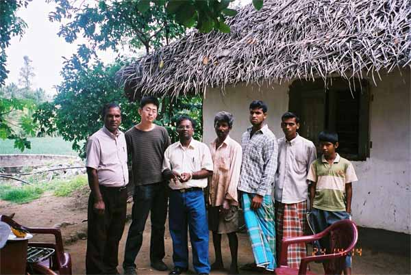
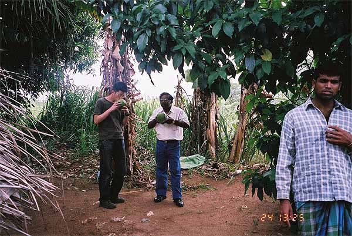
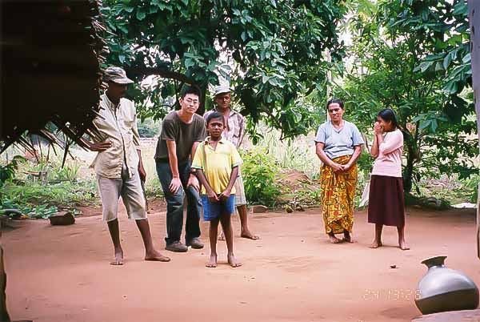
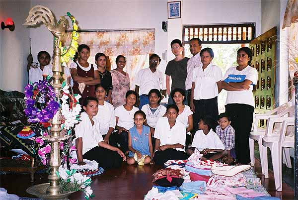

「今回は、すばらしいホームステイプログラムを提供して頂き、 ありがとうございました。
一人旅は今まで数回ほどしたのですが、このように現地の家族にお世話になるような体験はしたことがなく、本当に楽しかったです。
今回は、期間が自分の都合に合わせて決めることができて、スリランカの家庭にホームステイできたこと、値段が手ごろだったということで、申し込みました。
担当の英語の先生には、熱心に教えてもらい、ケンブリッジの教材も良かったです。ただ、テープを聞かないとできないレッスンが多かったので、次の人からは、テープも購入してレッスンされると良いと思います。
スリランカでのホームステイですが、日本の家庭では味わうことのできない経験ができました。特に、庭で生えている植物を使って料理してもらったり、あと野生動物（カメレオンとか）を見たときは、 自然の豊かさにびっくりしました。
ホストファミリーの方がたには、親切にしていただき、感謝しています。
料理も美味しかったです。
スリランカの人々は温かく、日本に帰るのが少し嫌になったほどです。
サンタ氏にも お世話になりました。
英語を話す機会がない日本の生活では、英語はほとんど上手にならないと思いますが、今回のホームステイでは、すべて英語で話さなければならない環境で暮らすわけですから、英語はホームステイ前に比べて上手になったと自分では思っています。
そして、スリランカ人の知り合いが出来たということも私にとっては本当に良かったと思っています。
彼らとの仲は、今回のホームステイで終わらせるのではなく、今後も続けていけたらと思っています。
またお世話になるかもしれませんが、その時はどうぞよろしくお願い致します。」

